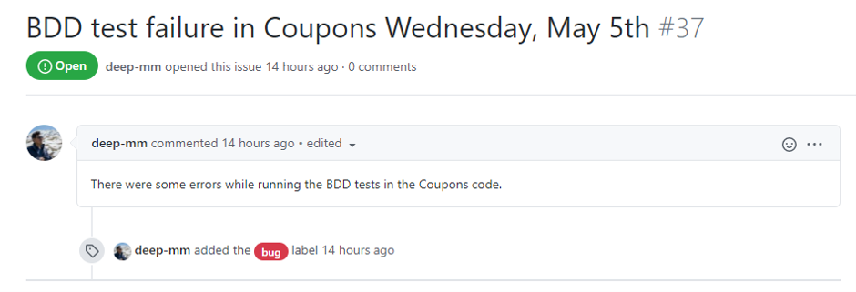
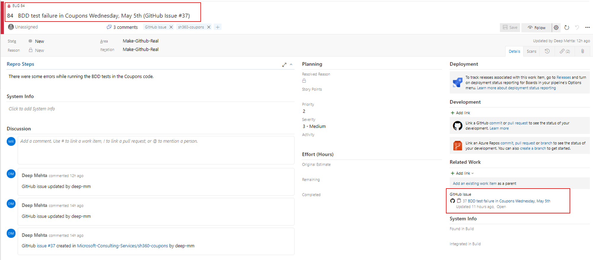
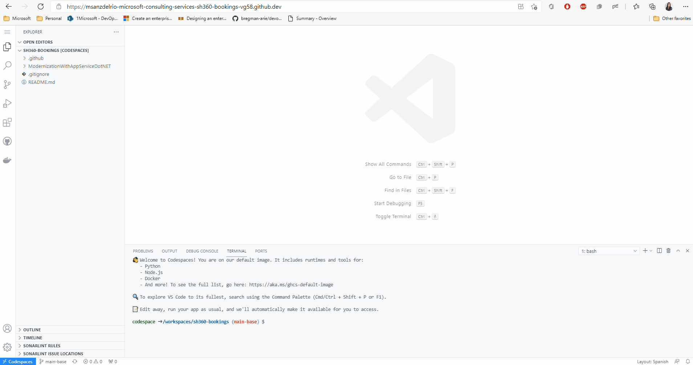
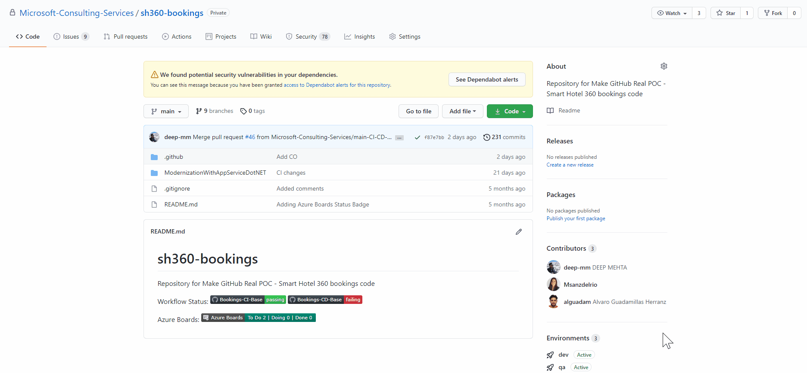
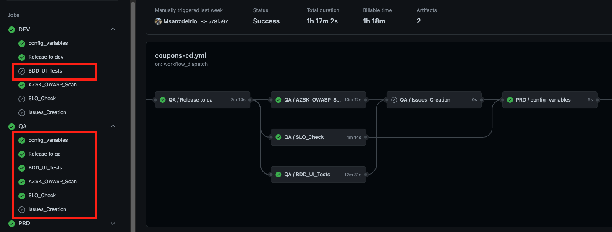
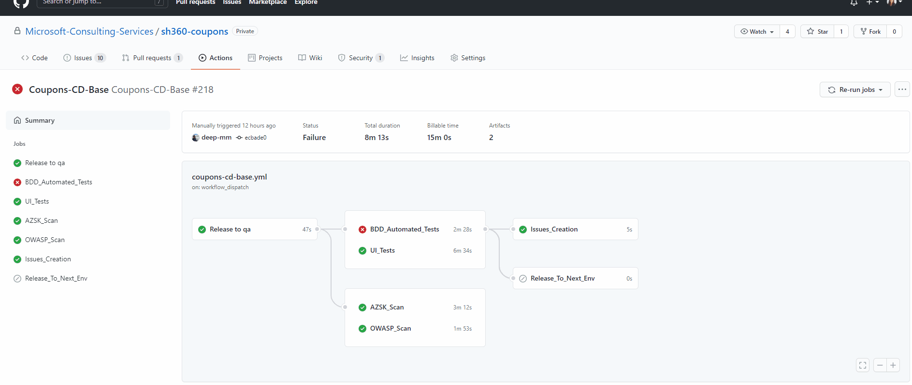

Module 1: Implementing Continuous Quality
In this module we will update the continuous delivery workflow of our team to enable BDD and UI tests during the deployment cycle for the QA environment. Also, in order to sync any GitHub issue created as part of any test with our Azure Boards, changes in the gh-issue-sync.yml file will be made.
Exercise 1: Continuous Quality Strategy
As part of any development cycle, before any deployment in the production environment, it is necessary to apply unit and integration tests to ensure that the code quality is the required. Unit tests were applied as part of the Continuous Integration lab, in the continuous integration workflow. In this lab we will see how to apply different integration tests in the continuous delivery workflow.
In the following exercises, we will modify two pipelines, gh-issue-sync and continuous-delivery. In the latter, we will enable two new jobs, where Behavior Driven Development (BDD) tests and User Interface (UI) tests will be executed. In addition, we will enable some steps to generate an issue in the repository if any error has occurred during the execution of any of these tests. The format of these issues can be seen in the /.github/issues/ directory.

However, as we have already seen in the Continuous Planning lab, our main tool for work planning and sprint management is Azure Boards. Therefore, it is necessary to synchronize these GitHub issues with ADO. To do this, we will enable the gh-issue-sync action. This is responsible for generating a Bug in ADO every time an issue is created in the repository. In addition, the status of ADO work item will update when the status of the issue from GitHub is changed.

Exercise 2: Workflow Changes
To complete this exercise, you will edit the gh-issue-sync and environment-template workflows using GitHub Codespaces.
Prerequisites - Exercise 2
- CQ Module 1 - Exercise 1 must be completed.
- Codespaces beta has been subscribed to and enabled for user account.
Open your GitHub Codespaces for coupons repository based on your team.
Create a new branch from main using
user/{user_id}/{purpose}type of schema.Open the
/.github/workflows/gh-issue-sync.ymlfile.Replace the ${{ false }} with always() to enable the action that syncs GitHub issues every time there is an opened, edited, deleted, closed or reopened issue in the repository. Save the changes.

Open the
/.github/workflows/environment-template.ymlfile. Search forBDD_UI_Testsjob. Uncomment that block to enable the BDD and UI Automated Test Stage. You can use shortcutCtrl + k + uto uncomment andCtrl + k + cto comment out a block of code.Now open the
.github/actions/continuous-quality/action.ymlfile. This is the composite action that includes the set-up and execution of the BDD and UI tests. See how, as part of the action, we are first creating the Teams card for continuously collaborate.Finally, at the end of the composite action, you can find two steps that create the ADO Bug for the BDD failure or UI test failure. Note the if condition that ensures the execution only in the failure case.
- name: Create ADO Bug on Failure for UI Tests uses: JasonEtco/create-an-issue@v2 if: steps.uitests.outcome == 'failure' env: GITHUB_TOKEN: ${{ secrets.PAT }} with: filename: .github/issues/ui-issue-template.md update_existing: trueCommit your changes and create a Pull Request. After merging the changes, see how the CI and continuous delivery workflows were triggered, and take a look at the QA environment logs.

Exercise 3: Run workflow
Prerequisites - Exercise 3
- CQ Module 1 - Exercises 1 and 2 must be completed.
As explained before, the implemented tests will run only in the QA environment. Thus, those specific stages will be skipped when running dev or prd environments. The following picture shows how a successful execution looks like.

You can manually run this workflow to better understand how each environment works.
By default, no issues should be created if following the steps in the right order. However, if you want to see how the issue is created when one the BDD or UI tests fail, then go to the composite action and comment out the if statement of either the Create ADO Bug on Failure for BDD Tests or the Create ADO Bug on Failure for UI Tests actions. The if statement ensures that an issue is only created when the Run BDD_Automated_Tests or Run UI_Tests actions fail respectively. Commit your changes in a new branch of your choice.
- name: Create ADO Bug on Failure for UI Tests
uses: JasonEtco/create-an-issue@v2
#if: steps.uitests.outcome == 'failure'
env:
GITHUB_TOKEN: ${{ secrets.PAT }}
with:
filename: .github/issues/ui-issue-template.md
update_existing: true
Now execute the workflow from that branch and check the results.Once it finishes, go to the ADO environment, and find a new work item (bug) created as a replica of that issue.

Key Takeaways
- Enabling shift left testing using Test Driven Development for quality code and detect bugs earlier.
- Custom templates can be defined to create your own GitHub issues.
- GitHub marketplace actions can be used to integrate and sync ADO boards and GitHub repository issues.